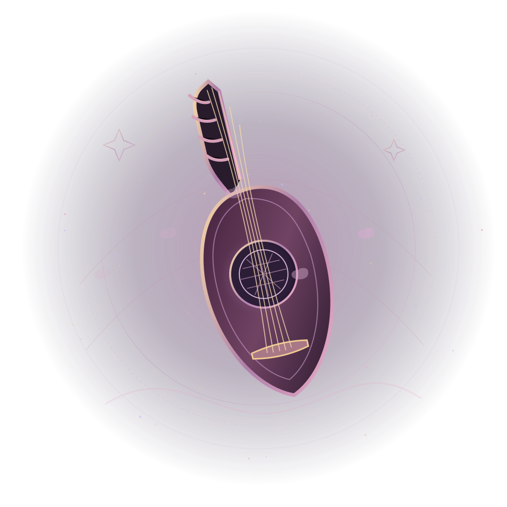

True MIDI performance
Play standard MIDI files, keep full chords and original timing, and adjust individual tracks for in-game instruments.
From a single melody to a full octet: play, practise, arrange and conduct MIDI performances in FINAL FANTASY XIV. Now featuring Piano Academy, Showmaster choreography and the Dark Stage interface.

The art of the ensembleWhere melodies meetOne studio for playing, learning, conducting and the moments your audience remembers.
Play standard MIDI files, keep full chords and original timing, and adjust individual tracks for in-game instruments.
Adapt arrangements for the full 37-note FFXIV Performance keyboard with octave and pitch-range tools.
Conductor and Follower roles coordinate party tracks, instruments and the game’s native Ensemble Ready Check.
Prepare every performer, review readiness, manage setlists and hold for a planned encore.
Plan positions and facing, recall solo or party formations, and walk safely through optional vnavmesh.
Build and inspect Solo, Duet, Quartet and Octet arrangements; export revised MIDI without overwriting originals.
A new chapter of Windbound Bard: a real-keyboard MIDI tutor, between-song showmanship and a darker, more polished concert desk.
Falling MIDI notes, a full 88-key piano, USB keyboard input and practice modes that let you learn at your own pace.
Explore the tutor ↗ 02 / SHOWSaved emote routines, conductor-led group choreography and a searchable library of your unlocked FFXIV emotes.
Plan the encore ↗ 03 / BANDCapture actual Adventurer Plate portraits and display them alongside instrument and track assignments.
Meet the band ↗ 04 / STAGEMove your own Bard into position or place the orchestra with the visual formation designer and saved facing.
Design a formation ↗Conceptual illustration, not an in-game screenshot
Assign tracks, switch instruments, arm your Bards and check everyone is ready before the first note. Native FFXIV Ensemble handles the start cue, whether your friends are on different PCs or you are running multiple clients.
Sketch a lineup with draggable Bard dots, save facing directions, and recall stage positions. Solo Stage works without a party; group positioning uses opt-in vnavmesh walking.
A small setup, a lot of musical possibility. Follow the quick path from the plugin installer to your first performance.
Use /xlsettings → Experimental → Custom Plugin Repositories, then install Nunu’s Windbound Bard through /xlplugins.
Open /windbound, enable expanded 37-key Performance, load a MIDI file and arm direct output before playing.
Play Solo—or set up Conductor and Followers, prepare the orchestra, then start with FFXIV’s native Ensemble Ready Check.
Windbound Bard grew from the joy of playing music with friends across Eorzea—one song, one duet, one grand concert at a time.
Built by Real Nunu, it brings familiar music-making tools together for performers who want to share something special.
Meet the project on GitHub ↗The songs, the memories, the moments between performances. Bring them all to Eorzea.